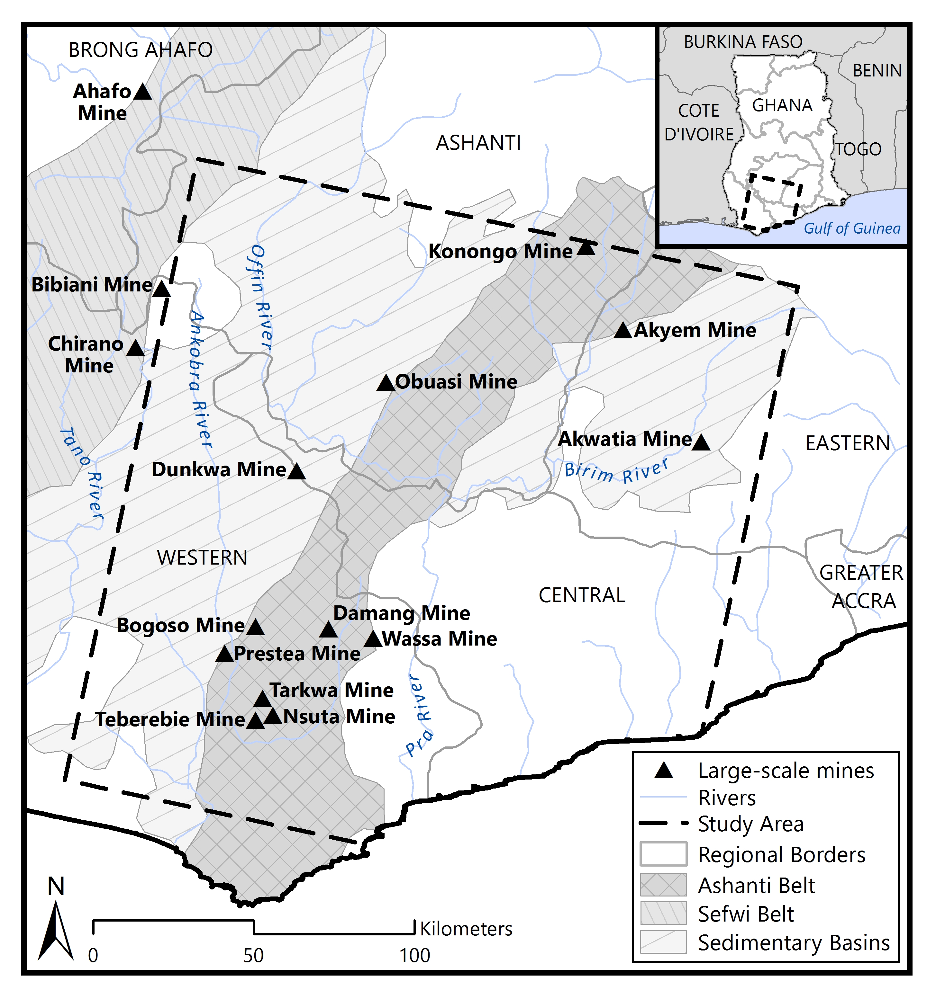
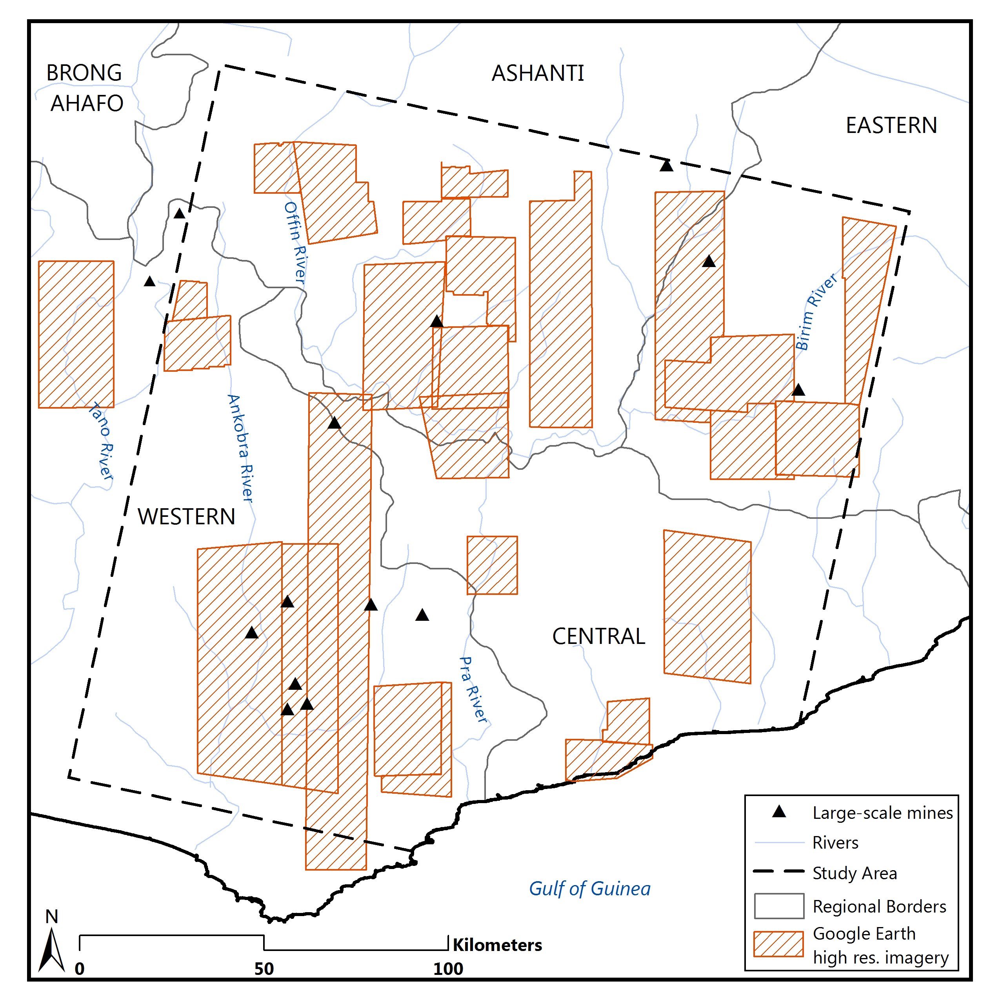
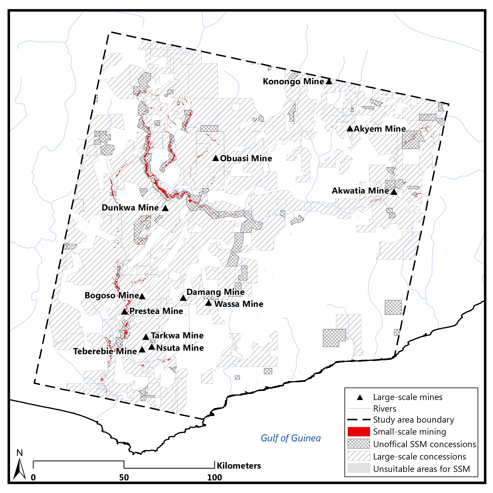
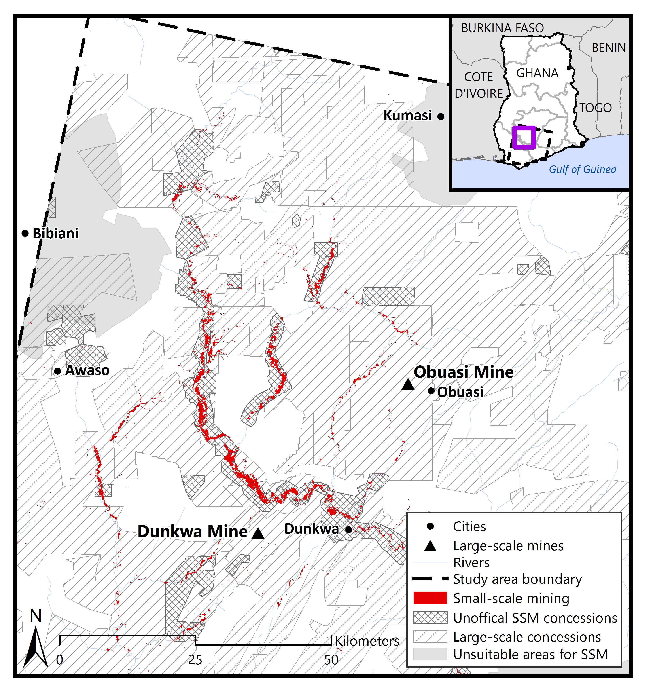
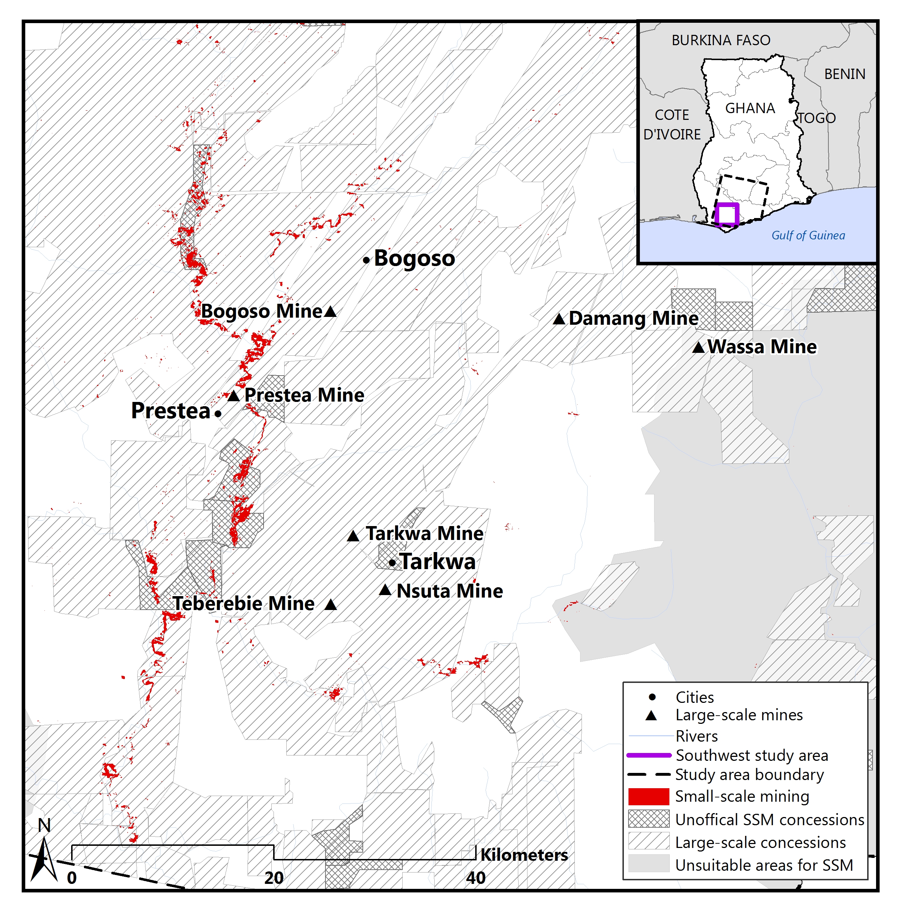
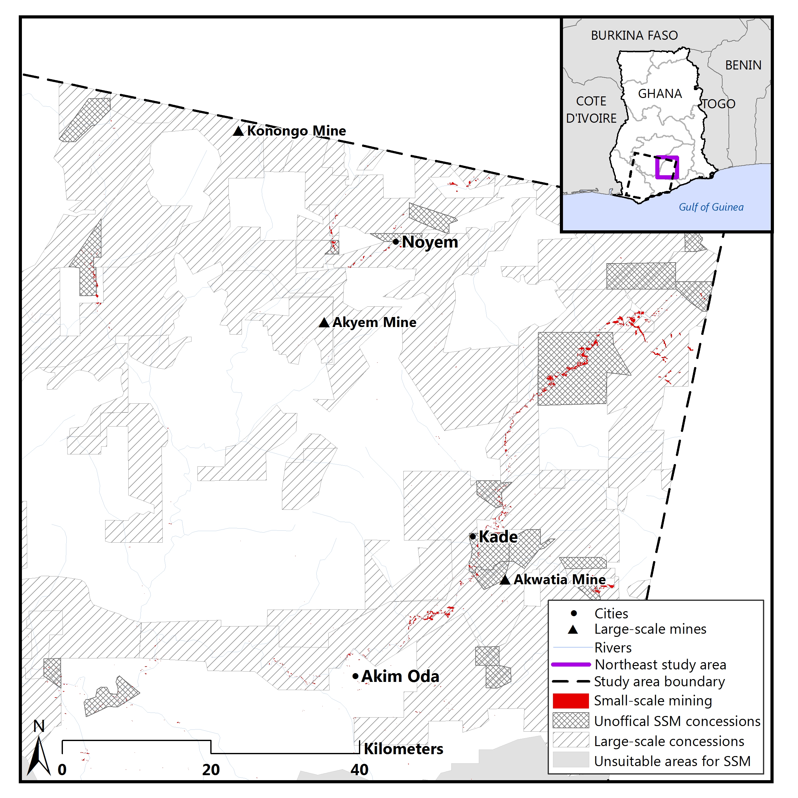

My research assessed the spatial overlaps between small and large-scale miners in Ghana in an effort to gain a better understanding of the conflict surrounding extraction throughout the country. I preformed a classification tree analysis to identify the small-scale mining occuring throughout the study area, and then assessed where and how frequently small-scale minining overlaps with existing large-scale concessions.
Throughout the literature review, I collected reported events of conflict between large and small-scale miners, and then used the data to characterize and assess the conditions of specific regions within in the study area.
Below are the final figures from the paper. I recently submitted the work for publication, and it is currently under review.
Figure 1: This map shows the study area. I used Landsat path/row 194/56 due to the high amount of both large and small-scale mining happening within the image. The hatched polygons show the locations of mineral bearing rock formations throughout the study area.
Due to consistently heavy cloud cover throughout the scene, three Landsat images were used to identify land cover for the enture scene: a Landsat-8 OLI image captured on 01/11/2015, a Landsat-7 EMT+ image captured on 01/03/2015, and a Landsat-8 OLI image captured on 12/23/2013.
Figure 2: The image above shows the locations of high resolution imagery on Google Earth that were used to preform accuracy analysis on the land cover classifications derived from the classification tree analysis.
Figure 3: The red areas show the identified small-scale mining occurring throughout the Landsat scene. The hatched areas display existing large-scale concessions and unofficial small-scale mining concessions. The map visually displays the resource competition and overlap between the sectors, with 52% of identified small-scale mining occuring on large-scale concessions.
The next three images show the three main areas of mining in this image, the northwestregion, the south westregion, and the northeast region in more detail.
Figure 4: This image shows the northwest corner of the study area. This area has been actively mined for decades and is where the majority of both conflict and overlap between small and large-scale miners occurs.
Figure 5: This image shows the southwest corner of the study area. Like the northwest area, this region has been actively mined for decades and has a long history of conflict between small and large-scale miners.
Figure 6: This last image shows the northeast corner of the study area. This region is newer to both large and small-scale mining and has experienced less conflict and overlap between the sectors.
The results of the analysis make clear the high amount of resource competition happening between the sectors throughout the study area. In addition, the maps have implications for policy development in terms of assessing ways in which the two sectors could peacefully and productively coexist in the future.